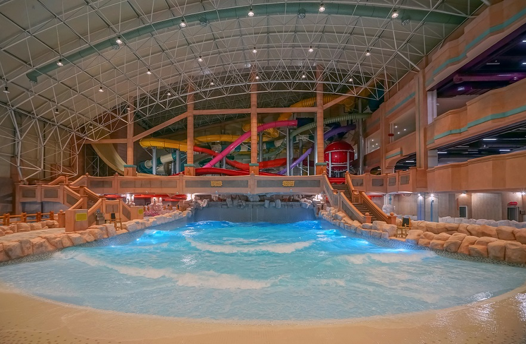
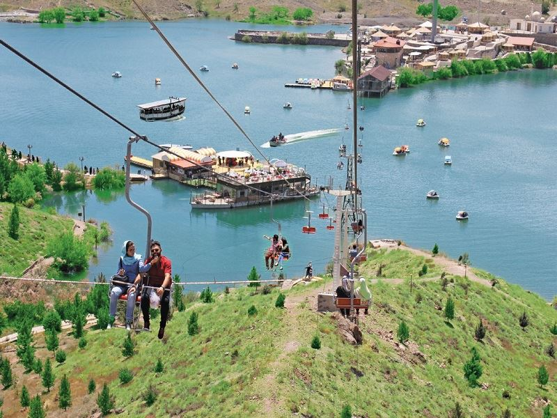
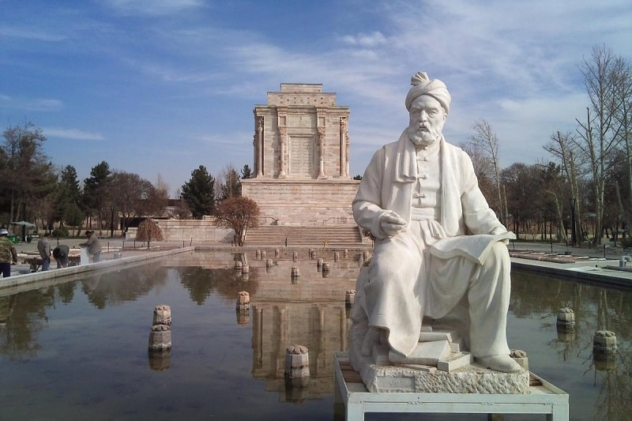
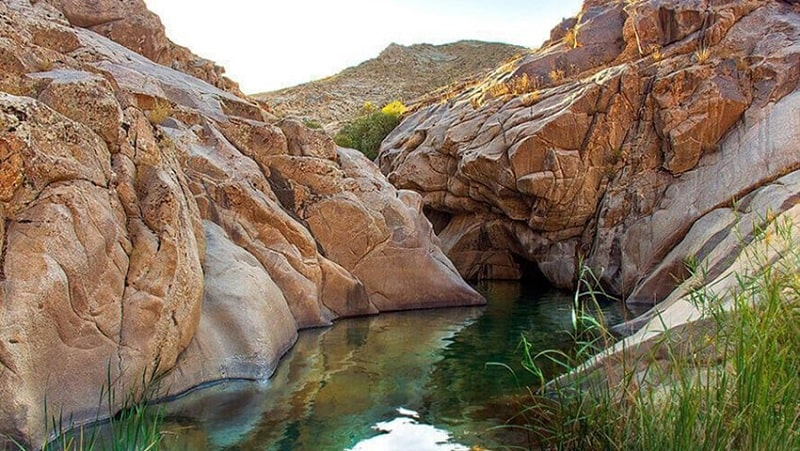
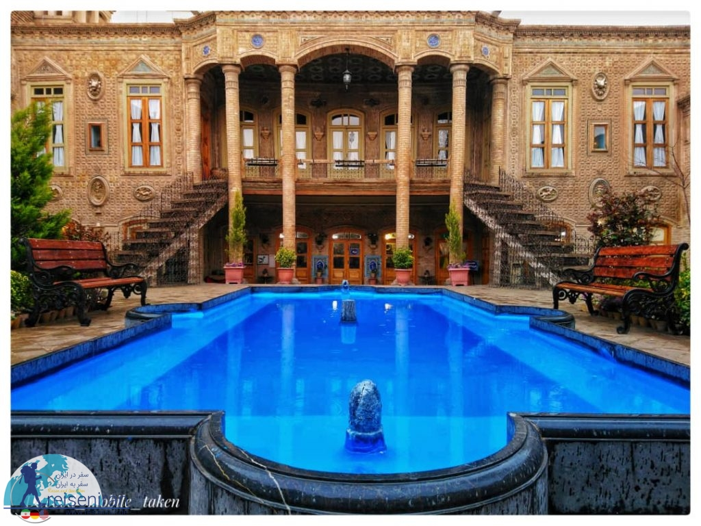
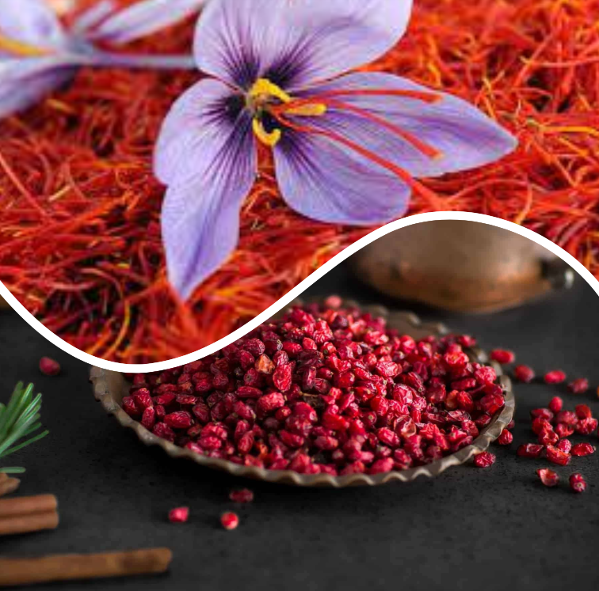

Mashhad Experiences:
Water Waves Land Park in Mashhad

Water Waves Land is the first indoor water park that was built in Mashhad. It has two separate spaces for women and men.
Facilities: various water slides, pool, sauna, Jacuzzi, coffee shop, fast food, etc.
Opening hours: 9 am to 9 pm.
Opening hours in summer: 9 am to 11 pm.
www.wwlpark.com
+985136008
Address: Water Waves Land, on the corner of 83 Andishe Boulevard, Andisheh Boulevard, Imam Ali Highway, Mashhad, Khorasan Razavi Province, Iran.
Chalidareh

A lot of entertainments have been built there. You can sit on the hill and watch the lake, ride a pedal boat,
eat Iranian delicious kebabs, take a kite, ride a horse, bungee jumping.
www.chalidarreh.com
+985134227125
Address: Chlidarreh Tourism Zone, 3 km of Noghondar Road, Torghabeh Town, Mashhad, Khorasan Razavi Province, Iran.
Tomb of Ferdowsi

Ferdowsi
Abu ʾl-Qasem Ferdowsi Tusi (c. 940–1020), was a Persian poet and the author of Shahnameh (“Book of Kings”),
which is the world’s longest epic poem created by a single poet, and the national epic of Greater Iran.
Ferdowsi is celebrated as the most influential figure in Persian literature and one of the greatest in the history of literature.
Tomb of Ferdowsi
Tomb of Ferdowsi is a tomb complex composed of a white marble base,
and a decorative edifice erected in honor of the Persian poet Ferdowsi located in Tus, Iran, in Razavi Khorasan province.
It was built in the early 1930s, under the Reza Shah,
and uses mainly elements of Achaemenid architecture to demonstrate Iran’s rich culture and history.
The construction of the mausoleum as well as its aesthetic design is a reflection of the cultural, and geo-political status of Iran at the time.
Address: Tomb of Ferdowsi, Shanameh Boulevard, 20 Km of Quchan Freeway, Mashhad, Iran.
Visiting hours: 7:30 a.m. to 5:00 p.m.
Mashhad Haft Howz

Seven Pools
The Drops of Acid rain made seven beautiful ponds in the Stones in a line, during several years. Water moved from one pond to another.
Daroogheh Historical House

Daroogheh House is a historical structure near the Imam Reza Holy shrine.
This house dates back to the Qajar period and is located in Navab Safavi Street.
The structure has been registered on number 6357 as one of Iran’s national monuments in 2002.
This house was erected on the order of Yousef Khan Harati on an area of 1100 square meters in the late Qajar period.
Darooghe House is built on the form of architecture
in the traditional style of Iranian historical houses and its architectural elements,
especially double story terrace design and ornamentation, illustrate the pattern of Russian architectural designs.
This historical structure was bought and rebuilt by municipality of Mashhad in 2012 and was opened in 2015.
Daroogheh House is made up of several sections: living rooms, basement, bakery, kitchen, the first private bathroom, and etc.
Approximate time of walking from the Holy Shrine: 8 minutes.
Visiting hours: 8 a.m. to 1 p.m.
Daroogheh Historical House Address: Darooghe Historical House, Sharestan Intersection, Navab Safavi Street, Mashhad, Khorasan Razavi Province, Iran.
What are Mashhad's Souvenirs?

Saffron, red gold
“Saffron” is the most valuable souvenir of Mashhad.
This product is one of the most valuable agricultural products of Iran that most of it are produced in Khorasan.
This product is grown in Central and South parts of Khorasan.
Mashhad as a center of packing and exporting of these products is a provider of saffron in different models and prices.
“Saffron” is a flower with purple petals and red stigma, which the dried stigma of it is used.
Beautiful color, magical aromas , the extraordinary taste of “saffron” make it suitable to use in food and it is also used in the paint industry, textile and leather industry.
Barberry (Zereshk)
You can buy Barberry from most of the saffron stores.
Pilgrims purchase these two products together.
Barberry is the agricultural products of South Khorasan , and you can find the finest one in Mashhad.
Two common types of barberry are pomegranate and puff models (for events).